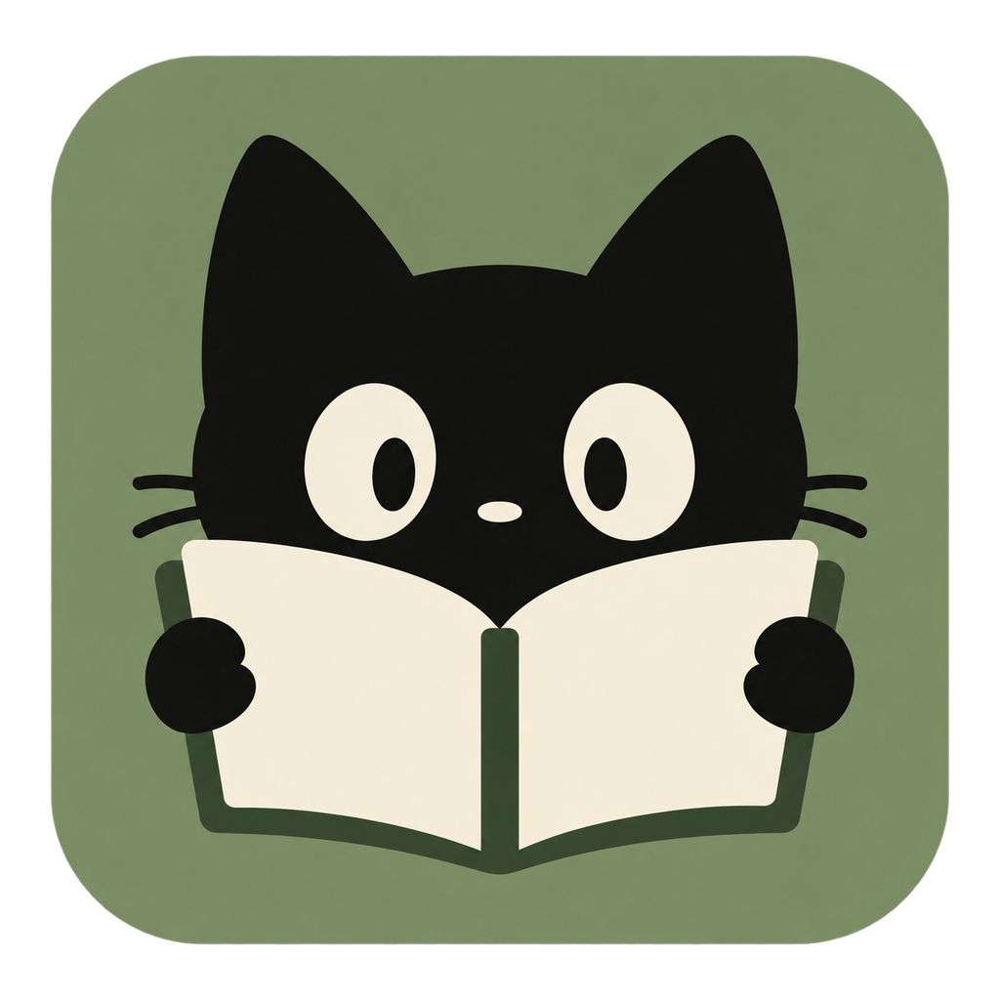

<!doctype html><html lang="zh-CN"><meta charset="utf-8"><title>Leaf · 猫咪与书图标</title><style>*{box-sizing:border-box}body{margin:0;background:#f4f5f1;color:#252b20;font:14px/1.5 -apple-system,BlinkMacSystemFont,'PingFang SC',sans-serif}main{max-width:1120px;margin:auto;padding:36px}header{display:flex;align-items:baseline;justify-content:space-between;margin-bottom:24px}h1{font-size:24px;margin:0}p{color:#6c7564;margin:0}.grid{display:grid;grid-template-columns:1fr 1fr;gap:20px}.panel{padding:26px;border:1px solid #dfe4d9;border-radius:18px;background:#fff}.panel.dark{background:#1a1d18;border-color:#30372a;color:#ecf0e7}.hero{display:block;width:256px;height:256px;margin:24px auto}.sizes{display:flex;gap:28px;align-items:flex-end;justify-content:center;padding:22px 0}.sample{text-align:center;font-size:11px;color:#7e8776}.dark .sample{color:#aeb8a2}.sample span{display:block;margin-top:10px}img{object-fit:contain}.label{font-size:12px;letter-spacing:.08em}footer{margin-top:22px;color:#6c7564;font-size:12px}</style><main><header><h1>Leaf · 猫咪与书</h1><p>无眼镜 / 简化轮廓 / 绿色圆角底板</p></header><div class="grid"></div><footer>Leaf 正式应用图标。预览尺寸为 CSS 像素；界面与安装包共用同一透明 PNG。</footer></main><script>const grid=document.querySelector('.grid');for(const [theme,title] of [['light','浅色背景'],['dark','深色背景']]){const section=document.createElement('section');section.className='panel '+theme;section.innerHTML=`<div class="label">${title}</div><div class="sizes">${[64,48,32,16].map(size=>`<div class="sample"><span>${size} px</span></div>`).join('')}</div>`;grid.append(section);}</script></html>
